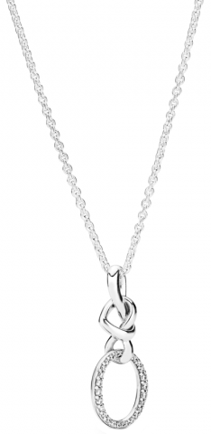
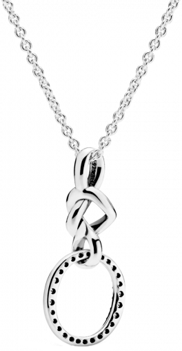

Описание
Стильное серебряное колье переосмысливает символ бренда - букву «О» увенчанную короной. В этом украшении корона трансформировалась в сплетенные серебряные сердца, удерживающие букву, украшенную паве из кубического циркония. Цепочка колье оснащена скользящим замком, что позволяет регулировать его длину. Это украшение вне времени и, безусловно, создаст особенный образ.
Металл: Серебро
Вставка: Цирконий
Колье с кулоном «Сплетенное сердце»
6 490 руб.